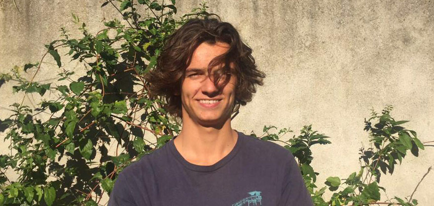
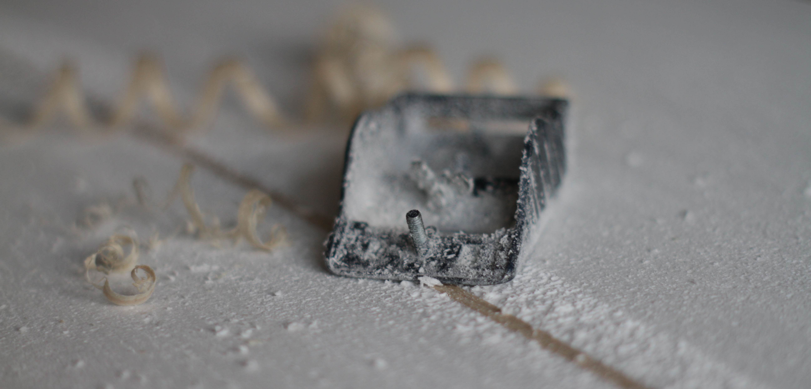

Qui suis-je?
Mon nom est Mathieu Jacq et je suis étudiant en école d'ingénieur à Troyes. Originaire de Bretagne, je me suis d'abord mis au skimboard avant de commencer la planche à voile puis le surf dans la région de St. Malo. Passionné par la conception de planches, j'ai commencé à en fabriquer en 2015 quand j'étais au lycée, me faisant la main jusqu'à aujourd'hui.
La qualité avant tout !
La qualité de la planche passe avant tout. Du shape à la finition, toutes les dimensions sont maîtrisées pour vous offir la planche qui vous convient le mieux.
J'ajuste les caractéristiques de la planche (rocker, volume, rigidité, masse, deck et carène) en fonction de vos exigences en tant que surfeur: niveau, poids et style de surf.
Choix des matériaux
Les matériaux sont choisis avec précaution en fonction du besoin de chacun.
Au vu des enjeux environnementaux actuels, les matériaux mis en oeuvre sont judicieusement choisis. Tous sont soit recyclés, soit recyclables, soit naturels ou bien partiellement bio-sourcés.
La fibre de lin sera par exemple largement préférée à la fibre de verre.

Fabrication
L'ensemble du processus de fabrication vise à réduire le besoin éléctrique et à minimiser les déchets produits. Les matériaux et les quelques consommables proviennent exclusivement de France métropolitaine pour limiter les transport routiers. Objectif bilan carbone restreint!
